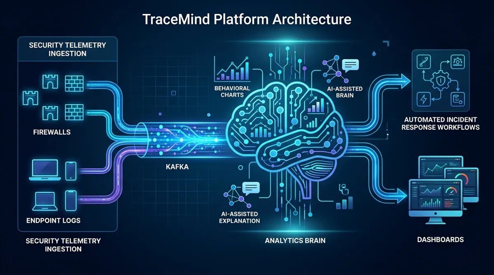

SCZone / TraceMind
In developmentSecurity analytics and UEBA platform connecting security telemetry to detection, investigation, and response. Work includes FortiGate and Wazuh event sources, Kafka ingestion design, parsing and normalization, OpenSearch dashboards, UEBA/DFIR workflows, AI-assisted explanation, and SOAR concepts.